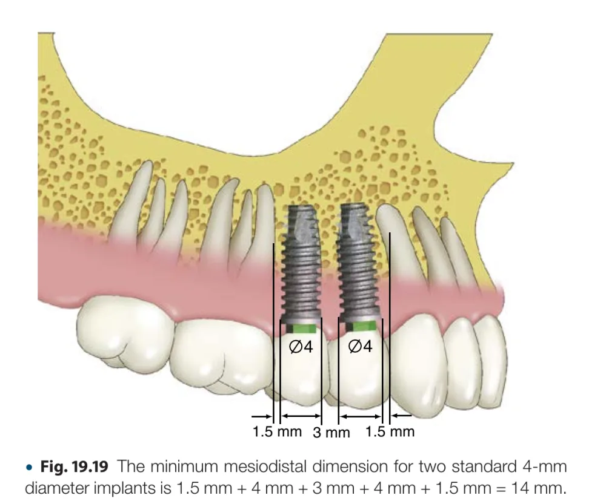
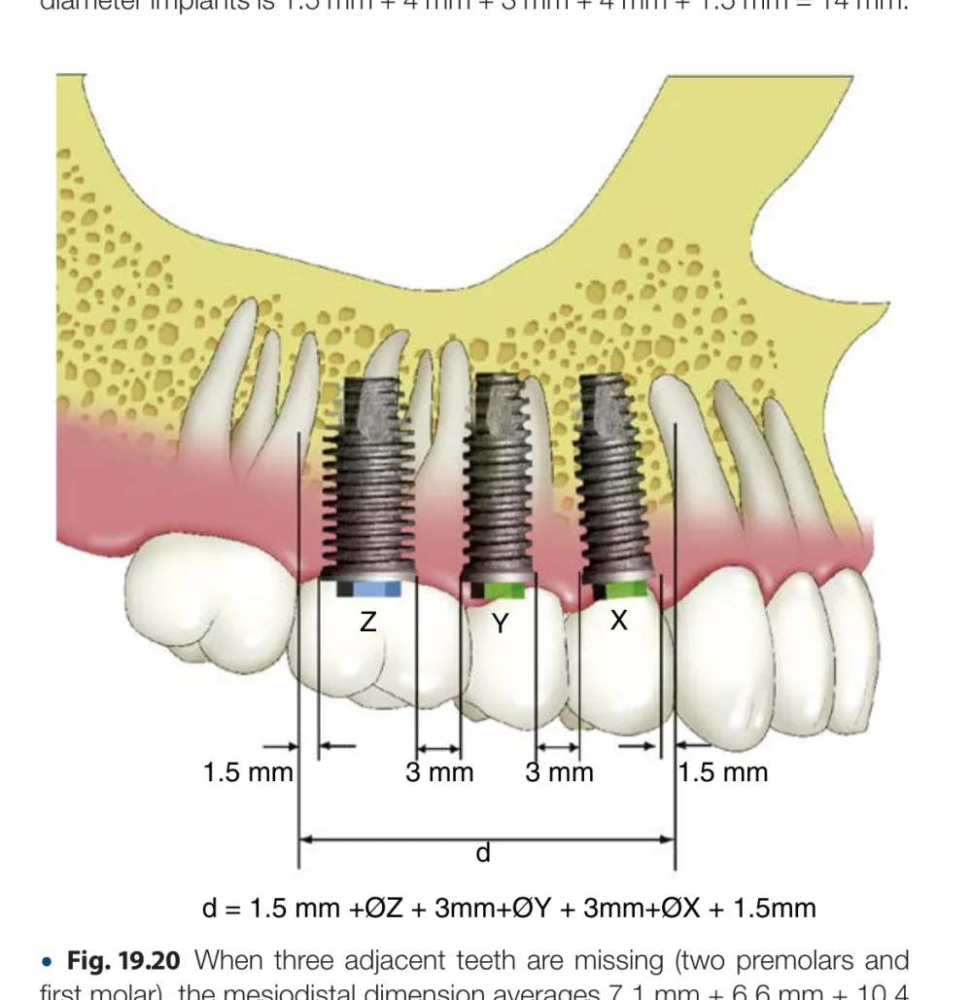

نسخه استخراجشده؛ ترجمه یا تأیید علمی انجام نشده است. وضعیت: captured
تا اینجا دانستی کجا و چند تا. اکنون میپرسیم: آیا اصلاً جا هست؟
دو عدد پایه داریم که همهی محاسبات از آنها ساخته میشود:
«در بیشتر موقعیتها یک ایمپلنت باید دستکم ۱٫۵ میلیمتر از دندان طبیعی مجاور و ۳ میلیمتر از ایمپلنت مجاور قرار گیرد.»
۱٫۵ میلیمتر از دندان، ۳ میلیمتر از ایمپلنت. و به عدم تقارن دقت کن: فاصله از ایمپلنت دو برابر فاصله از دندان است.
و دلیلش: این فاصله جای خطای جراحی را میگذارد و نقص کرستالی را جبران میکند؛ نقصی که دور ایمپلنت (یا دور دندانِ دچار بیماری پریودنتال) معمولاً کمتر از ۱٫۴ میلیمتر است. با این فاصله، نقص عمودی به نقص افقی تبدیل نمیشود و به استخوان ساختار مجاور نمیرسد. میان دو ایمپلنت، هر دو طرف چنین نقصی دارند؛ به همین دلیل فاصلهی لازم دو برابر است.
و اکنون حسابهای سادهای که از این دو عدد بیرون میآید:
یک ایمپلنت ۴ میلیمتری میان دو دندان:
۱٫۵ + ۴ + ۱٫۵ = ۷ میلیمتر
به بیان دیگر: «با استفاده از این راهنماها، هر ایمپلنت ۴ میلیمتری به ۷ میلیمتر فضای مزیوـدیستالی نیاز دارد.»
دو ایمپلنت ۴ میلیمتری میان دو دندان:
۱٫۵ + ۴ + ۳ + ۴ + ۱٫۵ = ۱۴ میلیمتر
و کاربردش: «این مفهوم اغلب اجازه میدهد دو ایمپلنت برای جایگزینی یک مولر قرار گیرد، وقتی دهانه دستکم ۱۴ میلیمتر برای ایمپلنتهای ۴ میلیمتری باشد.»
و اکنون یک استثنای ظریف که اغلب فراموش میشود:
«وقتی مولر غایب، دیستالیترین دندان در قوس باشد، دهانهی ۱۲٫۵ میلیمتری برای دو ایمپلنت ۴ میلیمتری لازم است، چون فاصلهی ۱٫۵ میلیمتری از آخرین دندان دیگر لازم نیست.»
۱۲٫۵ بهجای ۱۴ — چون یک طرف دیگر همسایهای ندارد. این یک و نیم میلیمتر گاهی همان چیزی است که یک طرح را از ناممکن به ممکن تبدیل میکند.
و یک نمونهی کامل که ارزش دنبال کردن دارد:
برای سه دندان مجاور، ابعاد میانگین چنین است: «۷٫۱ + ۶٫۶ + ۱۰٫۴ = ۲۴٫۱ میلیمتر».
و راهکار پیشنهادیاش: «در این وضعیت، طرحریزی ایمپلنتهای ۴ میلیمتری برای ساخت دو پرمولر هرکدام ۷ میلیمتر (۱٫۵ + ۴ + ۱٫۵) و یک ایمپلنت ۵ میلیمتری برای مولر اول، استخوان بیشتری اطراف هر ایمپلنت فراهم میکند.»
به منطق این تصمیم دقت کن: بهجای سه ایمپلنت هماندازه، اندازه را با فضای موجود متناسب کن — ایمپلنت بزرگتر آنجا که فضا بیشتر است. این هم سطح تماس را بالا میبرد و هم استخوان اطراف را حفظ میکند.
و یادت باشد این اعداد کفاند، نه هدف. اگر فضا بیشتر است، از آن استفاده کن؛ فاصلهی بیشتر از حداقل، همیشه مطلوبتر است.

یک پرسش قدیمی در پروتز ایمپلنت: آیا میتوان ایمپلنت را به دندان طبیعی اسپلینت کرد؟
قاعده روشن است: «بهعنوان یک قاعدهی کلی، پروتز ایمپلنتپشتیبان باید از دندانهای طبیعی مجاور مستقل باشد.»
و به بیان دیگر: «بهطور ایدهآل ایمپلنتها همیشه باید از دندانهای طبیعی مستقل نگه داشته شوند، بهدلیل تفاوتهای بیومکانیکی متعدد.»
دلیل بیومکانیکی را پیشتر دیدهای — اختلاف حرکت اپیکال (۲۵ تا ۱۰۰ در برابر ۳ تا ۵ میکرومتر) باعث میشود دندان زیر بار فرو برود و ایمپلنت سهم نامتناسبی بگیرد.
ولی یک دلیل دوم هم هست که کمتر گفته میشود و بسیار قانعکننده است:
«بروز پوسیدگی روی دندانی که در یک پروتز پارسیل ثابت اسپلینت شده، ۲۲ درصد از عوارض را در ۱۰ سال تشکیل میدهد، در حالی که کراونهای منفرد کمتر از ۱ درصد خطر پوسیدگی در همین بازهی زمانی دارند.»
۲۲ درصد در برابر کمتر از ۱ درصد. این بیش از بیست برابر تفاوت است — و ربطی به بیومکانیک ندارد: این پوسیدگی بیشتر در مارجین دندانِ کنار پونتیک یا تکیهگاه رخ میدهد.
و حلقهی آخر زنجیره:
• «دندانهای طبیعی ترمیمنشده خطر کمتری برای پوسیدگی نشان میدهند.»
• «و ایمپلنتها اصلاً پوسیده نمیشوند.»
• «ایمپلنتها به درمان ریشه نیاز ندارند، و کراونهای دندان طبیعی اسپلینتنشده درمان ریشهی کمتری دارند.»
پس استدلال دوسویه است: اسپلینت کردن هم ایمپلنت را در معرض بار نامتناسب میگذارد، هم دندان طبیعی را در معرض پوسیدگی و درمان ریشه. هیچکدام از دو طرف سود نمیبرند.
و عدد دوم: «عامل دوم شایع در ترمیمهای ثابت دندانپشتیبان، عوامل مرتبط با درمان ریشه است که در حدود ۱۵ درصد موارد در ۱۰ سال رخ میدهد.»
و فهرست کامل خطرهای اتصال ایمپلنت به دندان: «شل شدن پیچ اباتمنت، تحلیل استخوان مارجینال ایمپلنت، پوسیدگی دندان، و خارج شدن ترمیم از گیر.»
و مزیت پنهان استقلال که کمتر گفته میشود: «پروتزهای ایمپلنت مستقل ممکن است پونتیکها را کاهش دهند یا حذف کنند، و همزمان شمار تکیهگاهها را افزایش دهند و نیروها را مؤثرتر توزیع کنند.»
و: «افزایش شمار تکیهگاه، خطر ترمیم بدون گیر را کاهش میدهد — که سومین عارضهی شایع پروتز ثابت دندانپشتیبان است.»
و اکنون تمایزی که اگر آن را نگیری، کل این درس را وارونه میفهمی:
«مستقل از دندان طبیعی» با «مستقل از ایمپلنت دیگر» یکی نیست.
دربارهی اسپلینت کردن ایمپلنتها به یکدیگر حکم کاملاً متفاوت است. نخست باید پذیرفت که «اسپلینت کردن ایمپلنتهای دندانی بحثبرانگیز است» و ریشهی این بحث را شناخت:
«بسیاری از درمانگران همان اصول طرحریزی درمان موجود برای دندان طبیعی را برای ایمپلنتهای دندانی به کار میبرند. با این حال، ایمپلنتها و دندانها از نظر بیومکانیکی بسیار متفاوتاند. این واقعیت که دندانها بسیار متفاوت از ایمپلنتها با نیروها سازگار میشوند، در تصمیم به اسپلینت یا عدم اسپلینت اهمیت دارد.»
و هفت مزیت اسپلینت ایمپلنت به ایمپلنت:
• افزایش سطح عملکردی پشتیبانی
• افزایش فاصلهی A-P برای مقاومت در برابر بارهای جانبی
• توزیع نیرو روی سطح بزرگتر
• افزایش گیر سمانی پروتز
• کاهش خطر شل شدن پیچ اباتمنت
• کاهش خطر تحلیل استخوان مارجینال
• کاهش خطر شکست اجزای ایمپلنت
و جمعبندی: «به بیان دیگر، کل سیستم سود میبرد.»
به مزیت دوم دقت کن — اسپلینت کردن، فاصلهی A-P را افزایش میدهد. یعنی همان عددی که در درس پیش دیدی طول مجاز کانتیلور را تعیین میکند، خودش با اسپلینت بهبود مییابد.
و یک استدلال هشتم که کاملاً غیربیومکانیکی است و ارزش شنیدن دارد:
«اگر یک ایمپلنت مستقل با گذر زمان شکست بخورد، ایمپلنت خارج میشود، محل گرافت میشود، دوباره ایمپلنت گذاشته میشود، و کراون تازهای ساخته میشود. وقتی از میان چند ایمپلنت اسپلینتشده یکی شکست بخورد، ایمپلنت آسیبدیده اغلب میتواند زیر کراون برش داده شود و محل ایمپلنت یا کراون با همان پروتز به یک پونتیک تبدیل شود.»
یعنی اسپلینت، مسیر شکست را هم ارزانتر میکند — بهجای چند عمل جراحی و پروتزی در یک بازهی طولانی، یک برش و تبدیل به پونتیک.
پس قاعدهی نهایی این یونیت را چنین نگه دار:
ایمپلنتها را از دندان طبیعی مستقل نگه دار — ولی به یکدیگر اسپلینت کن.
استثنای مهم این قاعده، پروتز قوس کامل مندیبل است که در ادامه میبینی.
و حالا بحث پایانی این یونیت — قوس بیدندان و عدد شش:
«در گذشته یک قوس بیدندان از شش ایمپلنت برای پشتیبانی یک پروتز ثابت استفاده میکرد.»
و اکنون قاعدهای که در مندیبل بیدندان مرز را تعیین میکند:
«وقتی کمتر از شش ایمپلنت استفاده میشود، یک کانتیلور باید در پروتز ثابت طراحی شود، در نتیجهی فلکسچر مندیبل.»
و وقتی بیشتر باشد:
«وقتی هفت یا بیشتر ایمپلنت در مندیبل بیدندان قرار میگیرد، دو پروتز جداگانه بدون هیچ کانتیلور خلفی میتواند طراحی شود.»
و دلیلش: «تا فلکسچر و تورشن مندیبل امکانپذیر شود.»
این نکته ظریف و مهم است. مندیبل یک استخوان صُلب نیست؛ بدنهی آن در دیستال سوراخ چانهای هنگام باز کردن دهان خم میشود و هنگام گاز گرفتن محکم میپیچد. یک پروتز یکتکه که کل قوس را از یک انتها تا انتهای دیگر میبندد، در برابر این حرکت طبیعی مقاومت میکند — و آن مقاومت بهصورت استرس روی ایمپلنتها و اجزا ظاهر میشود.
پس دو پروتز جداگانه، فقط راحتی ساخت نیست؛ یک تصمیم بیومکانیکی است که به فک اجازه میدهد کار طبیعیاش را بکند.
و توجه کن که این با قاعدهی یکم در تضاد نیست: در حالت کمتر از شش ایمپلنت، کانتیلور یک ناگزیری است، نه یک انتخاب. با هفت ایمپلنت یا بیشتر، میتوانی هم کانتیلور را حذف کنی و هم به مندیبل اجازهی حرکت بدهی — و این بهترین حالت ممکن است.
